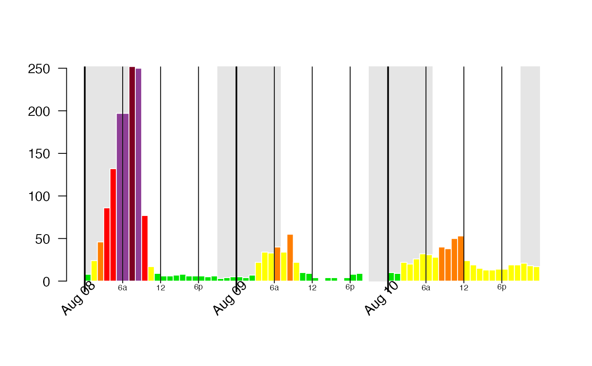

Creates a bar plot showing hourly PM 2.5 values for a specific monitor in a ws_monitor object. Colors are assigned to one of the following styles:
AQI -- hourly values colored with AQI colors using AQI
24-hour breaks
brownScaleAQI -- hourly values colored with
brownscale colors using AQI 24-hour breaks
grayScaleAQI --
hourly values colored grayscale colors using AQI 24-hour breaks
monitor_hourlyBarplot(ws_monitor, monitorID = NULL, tlim = NULL, localTime = TRUE, style = "AQI", shadedNight = TRUE, gridPos = "", gridCol = "black", gridLwd = 0.5, gridLty = "solid", labels_x_nudge = 0, labels_y_nudge = 0, dayCol = "black", dayLwd = 2, dayLty = "solid", hourCol = "black", hourLwd = 1, hourLty = "solid", hourInterval = 6, ...)
| ws_monitor | ws_monitor object |
|---|---|
| monitorID | monitor ID for a specific monitor in |
| tlim | optional vector with start and end times (integer or character representing YYYYMMDD[HH]) |
| localTime | logical specifying whether |
| style | named style specification ('AirFire') |
| shadedNight | add nighttime shading |
| gridPos | position of grid lines either 'over', 'under' ("" for no grid lines) |
| gridCol | grid color |
| gridLwd | grid line width |
| gridLty | grid line type |
| labels_x_nudge | nudge x labels to the left |
| labels_y_nudge | nudge y labels down |
| dayCol | day boundary color |
| dayLwd | day boundary line width (set to 0 to omit day lines) |
| dayLty | day boundary type |
| hourCol | hour boundary color |
| hourLwd | hour boundary line width (set to 0 to omit hour lines) |
| hourLty | hour boundary type |
| hourInterval | interval for hour boundary lines |
| ... | additional arguments to be passed to |
The labels_x_nudge and labels_y_nudge can be used to
tweak the date labeling. Units used are the same as those in the plot.
C_V <- monitor_subset(Carmel_Valley, tlim = c(2016080800,2016081023), timezone = "America/Los_Angeles") monitor_hourlyBarplot(C_V, main = "1-Hourly Average PM2.5", labels_x_nudge = 1, labels_y_nudge = 0)